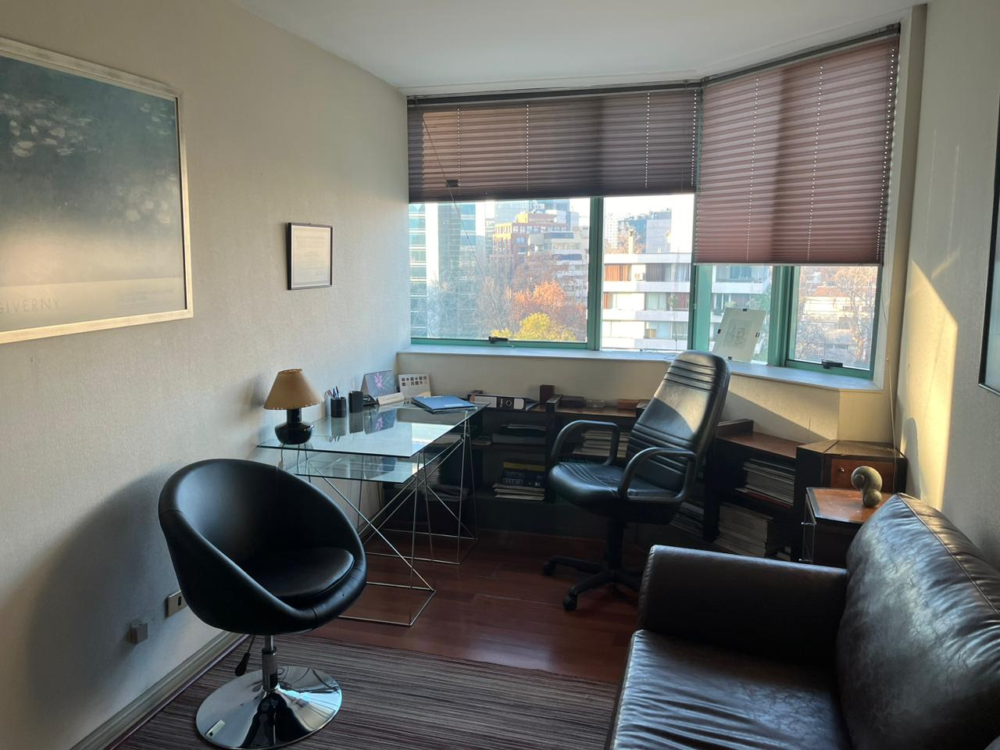

Atención Psiquiátrica Presencial
En nuestro centro atiende el doctor Andrés Heerlein Lobenstein, profesional con más de 40 años de experiencia, y con un amplio curriculum tanto en la atención médica como en la academia.
Conózcalo >